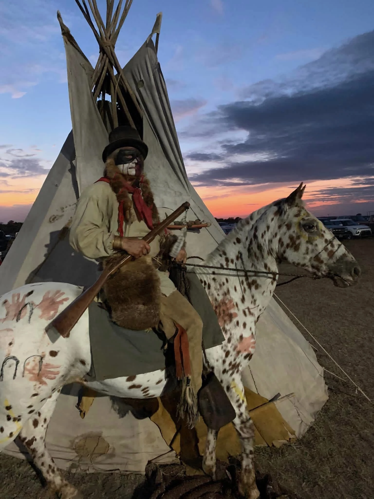

Mounted storytelling
Horses, riders, and period-style scenes help audiences connect with the stories, symbols, and traditions being presented.
Native American rodeo act • Living history • Arena entertainment
Led by Kevin Browning, Warpony Productions brings the rich traditions of Indigenous culture to arenas across the country through memorable performances built around history, unity, and patriotism.
About the act
Warpony Productions is a Native American rodeo and living-history performance that blends horsemanship, Indigenous heritage, patriotic presentation, and unforgettable arena theater.
The show shares culture through visual pageantry, period-inspired costuming, mounted scenes, and educational storytelling designed for families, schools, civic celebrations, and equine events.

What audiences experience
Horses, riders, and period-style scenes help audiences connect with the stories, symbols, and traditions being presented.

The performance emphasizes connection, respect, and shared experience as riders meet at the center of the arena.

Flag presentations and veteran-centered moments create a reverent atmosphere for rodeos and community gatherings.


Keeping history alive
From teepee camp scenes to mounted demonstrations, the production turns event spaces into immersive places where audiences can pause, learn, and remember.

Print pieces from the show highlight the “Keeping History Alive” theme and the classic Wild West presentation style.

Warpony Productions has appeared in community milestone celebrations, including the 150th celebration in Sedgwick, Kansas.
People behind the production


Gallery


Event entertainment for organizers
Warpony Productions helps event planners create a memorable feature attraction for rodeo grand entries, fair and festival programs, school assemblies, living-history days, equine events, veterans programs, and community celebrations.
Bring arena entertainment with mounted performers, visual pageantry, cultural storytelling, and patriotic themes that fit rodeo crowds and family audiences.
Support classroom learning with living-history presentation, Indigenous culture, service-centered themes, and age-appropriate storytelling for assemblies or special events.
Add a distinctive horse-centered presentation that complements clinics, competitions, expos, and equestrian entertainment schedules.
Create a respectful opening or featured moment built around unity, service, country, and community pride.
Booking FAQ
Warpony Productions is available for rodeos, fairs, festivals, schools, horse shows, civic events, patriotic programs, veterans events, living-history days, and community celebrations.
The production blends mounted storytelling, Native American living history, Indigenous heritage, period-inspired presentation, patriotic moments, and educational storytelling.
Yes. Event organizers can discuss program length, arena needs, school presentation goals, patriotic openings, and other booking details during the inquiry conversation.
Call 817-626-4452 or use the booking button below to message Warpony Productions on Facebook with your event date, location, audience, venue type, and the kind of presentation you need.
Bring Warpony Productions to your event
Warpony Productions is suited for rodeos, fairs, festivals, schools, horse shows, civic events, patriotic programs, veterans events, living-history days, and community celebrations across the United States.
Call 817-626-4452 or message Warpony Productions on Facebook to discuss availability, event location, arena needs, school programs, patriotic openings, and performance options.